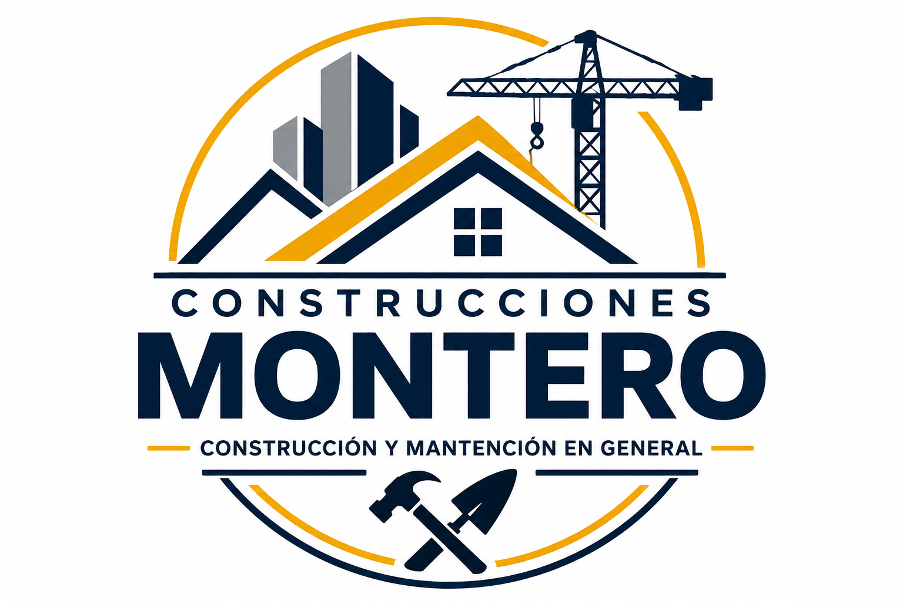

Construcción y ampliaciones
Realizamos construcciones y ampliaciones adaptadas a las necesidades de cada proyecto.
Valor referencial: Desde $500.000

Conoce los principales servicios que ofrecemos para proyectos de construcción, ampliación y mantención del hogar.
Realizamos construcciones y ampliaciones adaptadas a las necesidades de cada proyecto.
Valor referencial: Desde $500.000

Instalación de tabiquería para dividir y aprovechar mejor los espacios interiores del hogar.
Valor referencial: Desde $150.000

Instalación de cerámicas y revestimientos para distintos espacios del hogar.
Valor referencial: Desde $120.000

Realizamos reparaciones y trabajos de mantención para conservar tu hogar en buenas condiciones.
Valor referencial: Desde $80.000
Importante: Los valores mostrados son referenciales. El precio final dependerá de las características, dimensiones y materiales de cada proyecto.